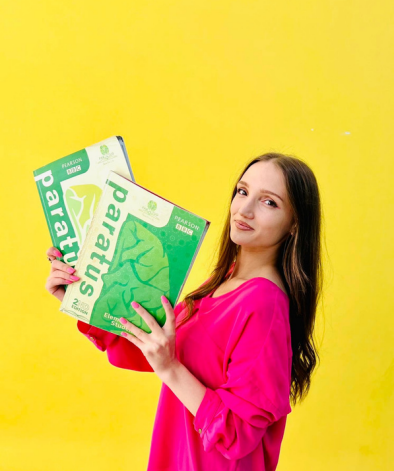

Մեր կենտրոնում ներդրված է BBC-ի և Person-ի համատեղ աշխատանքի արդյունքում ստեղծված միջազգային ծրագիրը, որը իր ողջ արդյունավետությամբ կարող ենք մատուցել անգլերեն լեզուն սովորել ցանկացողներին։ 👍
Ծրագիրը բաղկացած է 6 մակարդակից՝
1․Starter (սկսնակ)
2․Elementary (էլեմենտար)
3․Pre-Intermediate (միջինից ցածր)
4․Intermediate (միջին)
5․Upper Intermediate (միջինից բարձր)
6․Advanced (բարձր)
📌 Ծրագրի մակարդակները համապատասխանում են միջազգային A1-C2 մակարդակներին:
Ամենահետաքրքիրը գիտե՞ս որն է․ այն որ յուրաքանչյուր մակարդակ ունի հստակ տևողություն։👍
Դու կարող ես հստակ պլանավորել, թե քո անգլերենի իմացությունը ե՞րբ, ո՞ր մակարդակում կլինի։👀
✅ Յուրաքանչյուր մակարդակի ավարտին դու կստանաս լեզվի իմացության տվյալ մակարդակը հավաստող փաստաթուղթ։
Իսկ, թե ինչպե՞ս են անցնում պարապմունքները, խոսելն ավելորդ է:🤐
Միայն իմացիր, որ յուրաքանչյուր մակարդակ ուղեցկվում է՝
✅ Ժամանակակից նյութերով, որը հասանելի է միայն ծրագրային դասագրքում
✅Հատուկ աշխատանքային տետրերով
✅ Video & audio նյութերով
✅ Խոսակցական
✅ Քերականական
✅ Գրավոր առաջադրանքներով
Շնորհիվ ծրագրի առանձնահատկության, բառապաշարը զարգանում է ինքնաբերաբար, իսկ առաջադրանքները ներառված են մեծահասակների զբաղվածությունը հաշվի առնելով: 😍
Իսկ արդյունքում դու կտիրապետես՝
Գրագետ քերականությանը
Սահուն, անկաշկանդ բանավոր խոսքին
Լսողական հմտությանը
Անգլերենով մտածելու կարողությանը
Կունենաս հարուստ ու պրակտիկ բառապաշար։
Դե ինչ հիմա արի ծանոթանանք այն մասնագետերի հետ, ում վստահված է այս բարդ ու պատասխանատու գործը։🙂
-

Միսս Վարդ
Միսս Վարդուհին չնայած իր երիտասարդ տարիքին կուտակել է այնպիսի փորձ ու հմտություններ, որոնք արժանի են լուսաբանման։
Ընկեր Վարդուհին ՝ Բարձրագույն կրթությունը ստացել է ՇՊՀ-ի անգլերեն լեզվի և գրականություն բաժնում, վերջինս ավարտելով՝ ստացել գերազանցության դիպլոմ📕
2019 թվականին ուսանողական փոխանակման ծրագրով եղել է 7 երկրի առաջավոր համալսարաններում🌎
Չեխիայում մասնակցել է Forum 2000 միջազգային կոնֆերանսին
Խորվաթիայում արժանացել է Youthpass միջազգային սերտիֆիկատի 🤩
Հեղինակ է 2 գիտական հոդվածի, որոնցից մեկը՝ The Impact of Coronavirus on English Word-stock թեմայով տպագրվել է Լոս Անջելեսում Միջազգային Scholink Պարբերականի Education, Societyand Human Studies ամսագրի 2-րդ հատորի 1-ին համարում:
Մինչ այժմ նախագահում է ՇՊՀ ուսանողական գիտական ընկերությունը։
2021 թվականից համարվում է Պարատուս թիմի անդամ։😍
💥 Իսկ թե մեծերին սովորեցնելու ի՞նչ հատուկ մեթոդներ է կիրառում Միսս Վարդը կհամոզվեք ինքներդ, եթե մեկ անգամ մասնակցեք մեր անգլերենի դասերին
@Vi Mour -

Միսս Սիրանուշ
Ընկեր Սիրանուշը մեր ամենաժպտերես և հոգատար ուսուցիչներից մեկն է։ 😇
Ընկեր Սիրանուշը`
✅ Միջին մասնագիտական կրթությունը ստացել է ՇՊՀ֊ի քոլեջի Թարգմանություն բաժնում,
✅ Բարձրագույն կրթությունը` ՇՊՀ֊ի Անգլերեն լեզու և գրականություն բաժնում,
✅ 2019 թ. վերապատրաստվել է որպես երիտասարդական աշխատող։
2021 թվականից համարվում է Պարատուս թիմի անդամ։😍
Սիրում է աշխատել փոքրիկների հետ։ 💛 Իր դասերը մշտապես անցնում են ինտերակտիվ ու հետաքրքիր մեթոդներով։ 👀 Paratus Վստահեցնում եմ,որ Միսս Սիրանուշի հետ երբեք չես ձանձրանա։🤩.
@Siran Khachatryan -

Ընկեր Շուշաննա
✅ Միսս Շուշանը բարձրագույն կրթությունը ստացել է ՇՊՀ-ի անգլերեն լեզվի և գրականություն բաժնում, վերջինս ավարտելով՝ ստացել գերազանցության դիպլոմ:
✅Եղել է անգլերենի ոչ ֆորմալ ակումբների ակումբավար, որոնց նպատակն է եղել անգլերենով շփման և հաղորդակցման հմտությունների զարգացումը:
✅ Ջինիշյան հիմնադրամում «Այլընտրանք »կրթական ծրագրի ղեկավար կազմի անդամ է եղել, որը զբաղվել է Ted_Ed կրթական վիդեո հոլովակների թարգմանությամբ:
✅ World Vision կազմակերպությունում զբաղվել է թարգմանչական գործունեությամբ:
✅ Մեր գործընկեր ITSpace Academy-իում ուսուցանում է ծրագրավորողների համար նախատեսված անգլերենի դասընթացներ։
✅ Վերապատրաստվել է English for Career Development կրթական ծրագրով>
@Shushellie Atoyan